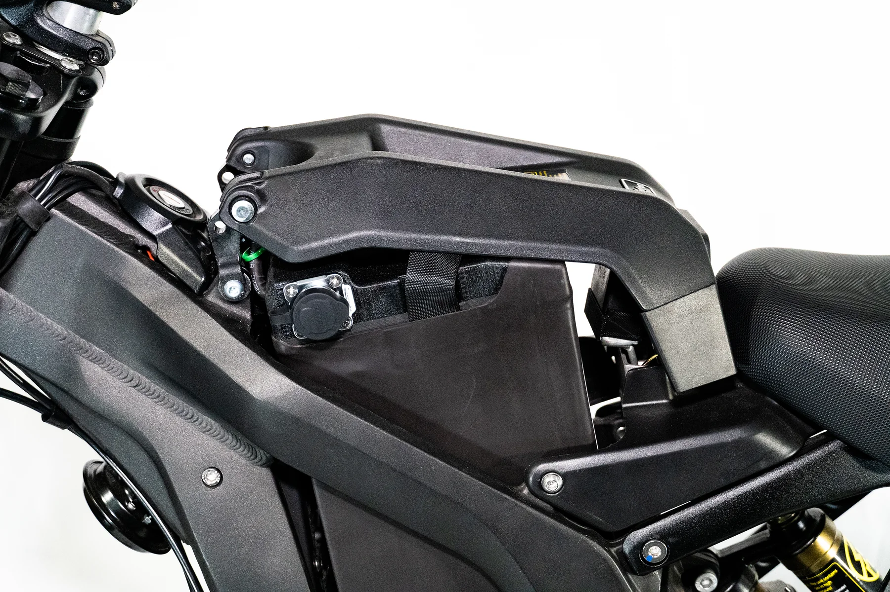
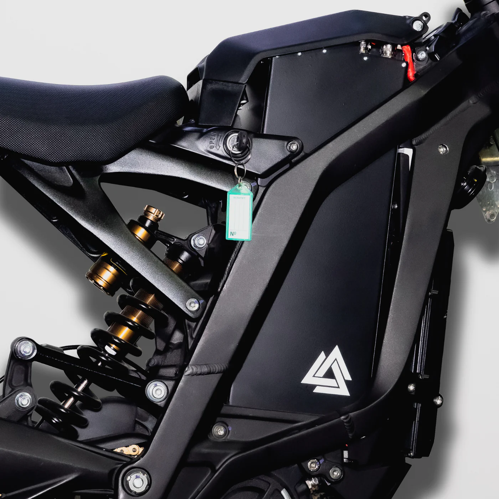
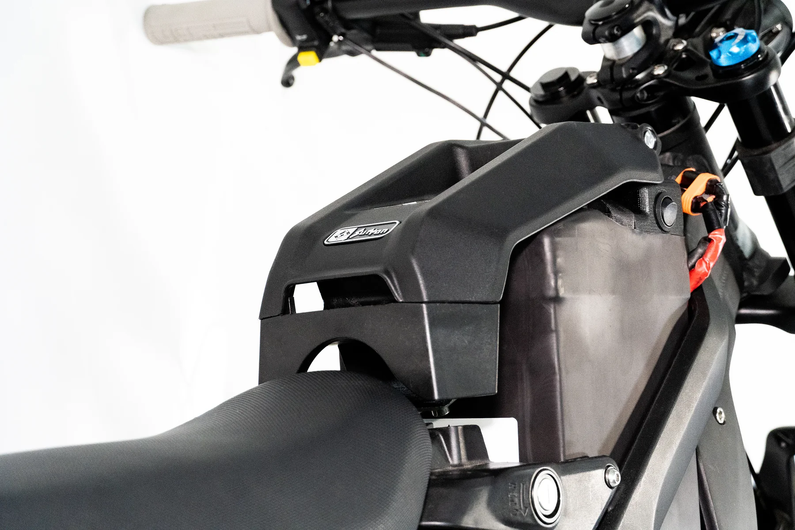

Sur Ron Mod Guide
Battery Upgrades
An upgraded battery will give the Sur Ron much more power, speed, and range based on your controller setup.
60v Batteries
60 volt batteries will work right out of the box as a drop in upgrade with the stock controller. But with the use of an aftermarket controller you can take advantage of the power and top speed increase that these batteries have to offer.
66v Batteries
66 volt batteries are perfeect for those that are having trouble deciding between upgrading to 60 volt or 72 volt batteries. A 66 volt battery will also work right out of the box as a drop in upgrade with the stock controller. But if you ever decide to upgrade to an aftermarket controller you can take advantage of the power and top speed increase that this battery has to offer.
72v Batteries
72 volt batteries will run cooler and provide much more top speed, because of their higher voltage. 72 volt batteries require an aftermarket controller to work.
Companies
Controller Upgrades
An upgraded controller gives the Sur Ron a lot more power when paired with an upgraded battery. This will double or even triple the speed of your bike. They also give you the ability to tune the power levels in sport and eco mode to your liking. As well as increasing, decreasing, or disabling the regenerative braking. Aftermarket controllers give you the ability to run an upgraded 60 or 72 volt battery for more power, top speed, and range. Check out the battery page for more information on battery upgrade.